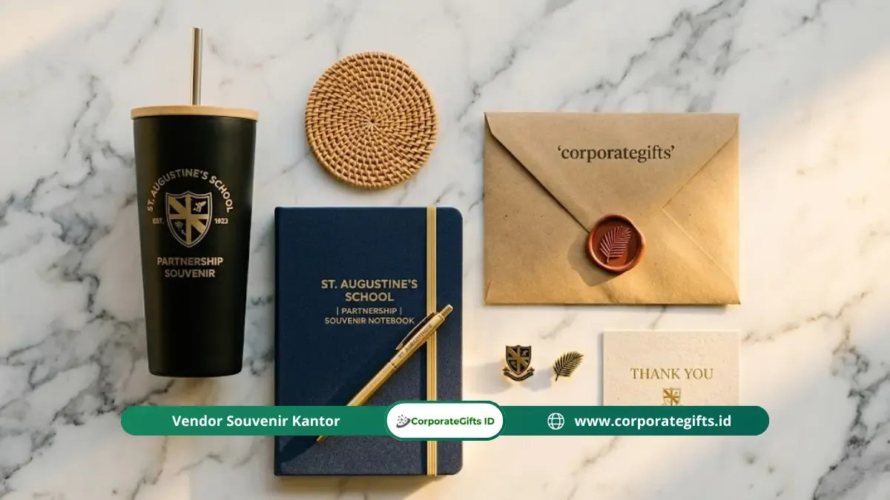

Corporate Gifts ID - Souvenir mitra sekolah adalah cinderamata resmi yang diberikan oleh institusi pendidikan kepada pihak rekanan untuk memperkuat hubungan kerja sama. Lima jenis souvenir yang paling direkomendasikan dan banyak dipilih meliputi: plakat penghargaan, merchandise fungsional custom berlogo, produk premium branded, alat tulis (office supplies) institusional, serta set hadiah eksklusif berkemasan resmi.
Setiap jenis memiliki karakter, fungsi, dan segmen mitra yang berbeda sehingga pemilihannya perlu disesuaikan dengan konteks kerja sama yang berlaku. Memahami perbedaan tiap kategori membantu sekolah mengalokasikan anggaran secara efektif sekaligus memaksimalkan dampak souvenir terhadap hubungan institusional.
Poin Kunci 5 Jenis Souvenir Mitra Sekolah:
- Plakat Penghargaan: Pilihan paling formal dengan nilai simbolis tinggi untuk momen seremonial MoU dan kemitraan strategis.
- Merchandise Fungsional: Efektif sebagai media branding harian di lingkungan kerja instansi rekanan.
- Produk Premium Branded: Mencerminkan tingkat apresiasi tertinggi kepada mitra prioritas bernilai kerja sama besar.
- Alat Tulis Kantor Custom: Fleksibel dari sisi anggaran dan relevan untuk distribusi massal ke semua jajaran staf mitra.
- Set Hadiah (Gift Box): Memberikan pengalaman unboxing berkesan dalam bingkisan paket terkurasi.
Apa Saja 5 Jenis Souvenir Mitra Sekolah yang Paling Populer?
Lima kategori utama cinderamata kemitraan sekolah di bawah ini mencakup rentang harga dan kegunaan yang luas untuk berbagai momentum:
1. Plakat dan Trofi Penghargaan
Plakat adalah jenis souvenir mitra sekolah paling formal yang lazim digunakan dalam acara penandatanganan nota kesepahaman (MoU) dan seremoni resmi kemitraan. Umumnya, produk ini dibuat dari akrilik bening, kayu jati finishing politer, atau campuran logam dan kaca, dilengkapi ukiran nama instansi mitra serta logo sekolah secara presisi.
Keunggulan utama plakat adalah sifatnya yang permanen dan mudah dipajang di ruang kantor atau aula penerima. Hal ini menjadikan plakat sebagai media pengingat visual yang terus aktif setiap hari tanpa memerlukan biaya promosi tambahan.
2. Merchandise Fungsional Custom Berlogo
Merchandise fungsional mencakup produk seperti tumbler stainless SUS304, tote bag kanvas tebal, notebook hardcover, dan pulpen metal yang semuanya dicetak atau diukir dengan identitas sekolah. Kategori ini menjadi pilihan favorit karena memiliki utilitas tinggi dalam rutinitas penerima.
Menurut data industri barang promosi, produk fungsional seperti tumbler dan tas berlogo digunakan rata-rata hingga 9 bulan, menjadikannya souvenir dengan cost-per-impression terendah dibandingkan media promosi konvensional lainnya.

Merchandise fungsional dan gift set eksklusif berlogo resmi sekolah mitra.
3. Produk Premium Branded untuk Mitra Strategis
Produk premium seperti jam meja kayu berukir, set pena eksklusif dalam kotak kulit, wireless charger kustom, atau power bank bertekstur metal diperuntukkan bagi mitra dengan kontribusi kerja sama terbesar. Kualitas material dan detail finishing secara langsung mencerminkan penghormatan tinggi sekolah kepada lembaga rekanan.
4. Alat Tulis dan Office Supplies Custom
Alat tulis berlogo seperti pulpen metal, sticky note pad, clip holder, atau kalender meja adalah kategori yang paling efisien dari segi anggaran. Produk ini cocok ketika souvenir perlu didistribusikan dalam jumlah banyak kepada perwakilan peserta lokakarya atau delegasi instansi rekanan.
5. Set Hadiah Eksklusif dalam Kemasan Resmi
Set hadiah atau custom gift box memadukan beberapa item terkurasi dalam satu boks elegan bersleeve identitas sekolah. Misalnya, perpaduan notebook kulit sintetis, tumbler termos mini, kartu ucapan, dan pin enamel kelembagaan. Format ini menghadirkan pengalaman unboxing yang sangat berkesan.
Tabel Komparasi Karakteristik 5 Jenis Souvenir Mitra Sekolah
Gunakan tabel komparasi berikut untuk mempermudah pencocokan jenis cenderamata dengan segmen mitra Anda:
| Jenis Souvenir | Tingkat Formalitas | Nilai Guna Utama | Target Mitra Terbaik |
|---|---|---|---|
| Plakat & Trofi | Sangat Tinggi (Formal) | Pajangan Meja / Display Ruang Pimpinan | Mitra MoU, Donatur Utama, Pejabat Dinas |
| Merchandise Fungsional | Sedang - Kasual Rapi | Dipakai Harian (Kantor, Travel) | Instruktur Industri, Mitra Magang |
| Produk Premium Branded | Tinggi (Eksklusif) | Perangkat Kerja Eksekutif | Direksi Perusahaan Mitra Strategis |
| Alat Tulis Kantor | Standar Profesional | Peralatan Rapat & Administrasi | Delegasi Rombongan, Staf Pelaksana |
| Set Hadiah (Gift Box) | Tinggi - Sangat Elegan | Pengalaman Unboxing & Multi-Item | Tamu Kehormatan, Pembicara Seminar |
Bagaimana Cara Memilih Jenis yang Paling Tepat?
Pemilihan jenis souvenir yang tepat bertumpu pada pertimbangan tiga variabel penting:
- Kedudukan Strategis Mitra: Bedakan antara mitra pendukung insidental dengan mitra strategis tahunan.
- Ketersediaan Anggaran: Rancang alokasi bujet secara berjenjang agar belanja cinderamata efisien tanpa mengorbankan kualitas.
- Momentum Seremoni: Sesuaikan bentuk kemasan dengan suasana acara formal maupun informal.
Pertanyaan yang Sering Diajukan (FAQ)
Kesimpulan Praktis: Harmonisasi Cenderamata dan Nilai Kemitraan
Memilih cenderamata kemitraan sekolah dengan cermat menghasilkan dampak relasional yang langgeng. Investasikan perhatian Anda untuk memetakan kategori produk yang tepat agar setiap bingkisan merepresentasikan martabat dan rasa hormat institusi Anda secara sempurna.
Konsultasikan konsep cenderamata sekolah dan universitas Anda bersama tim ahli di CorporateGifts.ID. Kami siap membantu pembuatan mockup digital gratis, penyesuaian anggaran, hingga penyediaan dokumen administrasi resmi.

Ditulis oleh: Arinda Zakia
Senior Corporate Gifting SpecialistSpesialis kurasi merchandise dan souvenir korporat di CorporateGifts.ID. Berpengalaman lebih dari 7 tahun dalam menyusun paket corporate gift fungsional untuk instansi BUMN, kementerian, perbankan, dan institusi pendidikan di Indonesia.
Lihat Profil Lengkap & Panduan Lainnya